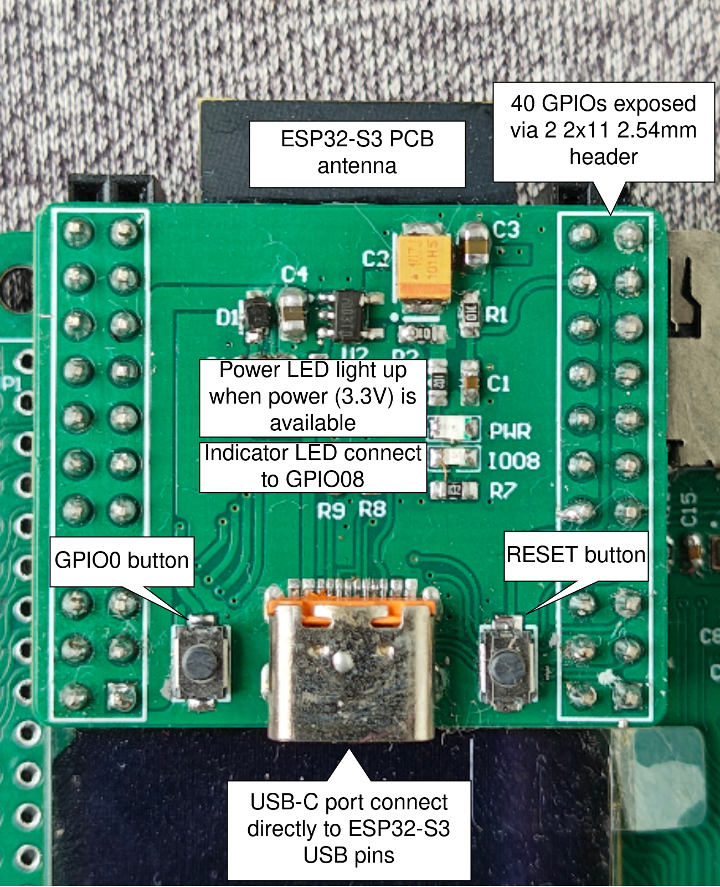
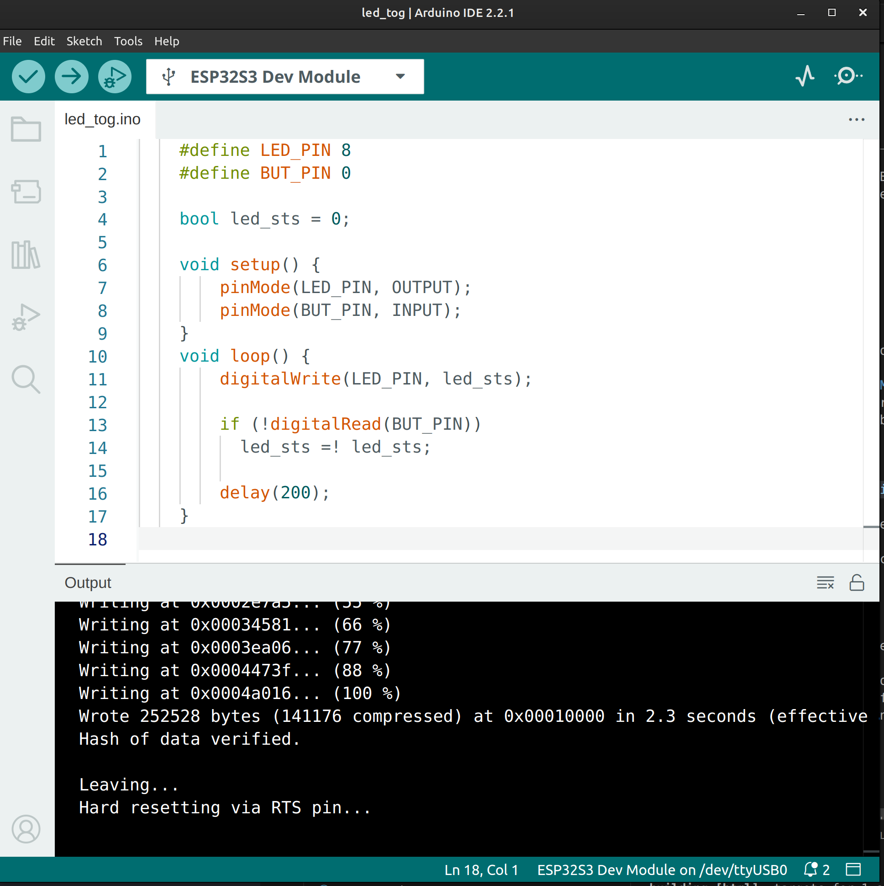

Project 1 : Turn ON and OFF the LED using a button#
Introduction#
In this project, we will learn how to turn ON and OFF a LED light using just a button, similar to a household light switch but using button and programming logic instead a “dumb” switch. By the end of this tutorial, you will know how to:
Read button as an input from the MCU.
Write the output signal to the LED
Understand the programming logic to use single button event to change the LED states.
Requirements#
Before starting, make sure you have the following:
The STEAM development kit or The STEAM standalone microcontroller board
USB cable
Arduino IDE with ESP32 toolchain installed
In this project the built-in LED and button will be used, no external components are required.
{kind=link}

The interfacing description of the microcontroller board#
The build in LED on GPIO08 and the button on GPIO0 will be used
Note
The button here is read logic LOW when being pressed based on the schematic
Writing the Program#
Create a new sketch in the Arduino IDE and enter the following code:
#define LED_PIN 8
#define BUT_PIN 0
bool led_sts = 0;
void setup() {
pinMode(LED_PIN, OUTPUT);
pinMode(BUT_PIN, INPUT);
}
void loop() {
digitalWrite(LED_PIN, led_sts);
if (digitalRead(BUT_PIN))
led_sts =! led_sts;
delay(300);
}
Uploading the Program#
Connect the Arduino board to your computer using the USB cable.
Open the Arduino IDE.
Select ESP32S3 Dev Module from Tools → Board → esp32.
Select the correct serial port obtained when the board is connected to the computer from Tools → Port.
Click the Upload button.
Wait until the upload is complete.

Expected Result#
After uploading the program to the Arduino board:
The LED is initially turned OFF.
Each time the push button is pressed, the LED changes its state.
If the LED is OFF, pressing the button turns it ON.
If the LED is ON, pressing the button turns it OFF.
A short delay of 300 ms helps reduce multiple toggles caused by button bouncing.
How the Code Works#
`setup()`
The setup() function runs once when the Arduino starts.
pinMode(LED_PIN, OUTPUT);
pinMode(BUT_PIN, INPUT);
LED_PIN is configured as an output to drive the LED.
BUT_PIN is configured as an input to read the push button.
loop()
The loop() function executes continuously.
First, the current LED state stored in led_sts is written to the LED pin.
digitalWrite(LED_PIN, led_sts);
Next, the program checks whether the button is pressed.
if (digitalRead(BUT_PIN))
led_sts = !led_sts;
If the button input is HIGH, the value of led_sts is inverted. This changes the LED from ON to OFF or from OFF to ON.
Finally, the program waits for 300 milliseconds.
delay(300);
This delay slows down the loop and helps prevent the LED from toggling multiple times due to the mechanical bouncing of the push button.
Experiment#
Try modifying the program to better understand how it works.
Change the delay from 300 ms to 100 ms or 500 ms and observe how the button response changes.
Initialize led_sts to true so the LED starts in the ON state.
bool led_sts = true;
Replace the delay with a software debounce algorithm for more responsive button detection.
Summary#
In this tutorial, you learned how to use a push button to control an LED. The program continuously reads the button state and stores the LED status in a Boolean variable. Whenever the button is pressed, the stored state is inverted, causing the LED to toggle between ON and OFF.
Key concepts covered include:
Configuring GPIO pins as INPUT and OUTPUT.
Reading the state of a push button using digitalRead().
Controlling an LED using digitalWrite().
Using a Boolean variable to store the LED’s current state.
Toggling a variable using the logical NOT (!) operator.
Using a short delay to reduce the effects of button bouncing.
This project introduces basic digital input and output operations, providing a foundation for more advanced Arduino applications involving buttons, switches, sensors, and user interfaces.